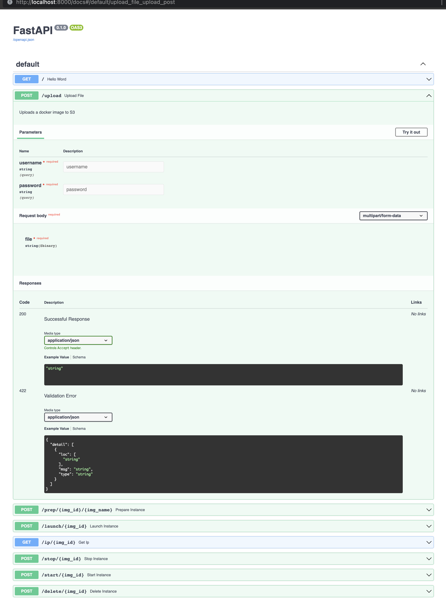

As part of a graduate course in cloud computing, I worked with a group to develop a container testing service. Many organizations host their web applications using containers (see below) that run on cloud infrastructure. Our group determined that a service allowing organizations to test their containerized applications in a simulated cloud-based production environment would be met with enthusiasm. The service we would implement would allow our clients to upload a container image to our infrastructure. Our service would then provision the necessary resources to deploy and test this container. Almost immediately, we recognized that providing such a service entailed exposing our infrastructure to abuse by malicious actors. For example it would be trivial to upload a container intended to misuse our cloud infrastructure for the purpose of mining cryptocurrency, or to provision web hosting services in order to facilitate illegal activity. We determined it would be necessary to thoroughly vet our clients and also to require them to register an account with us before using our service. My contribution to this project was to create an authentication microservice that would be used to authenticate our clients before they could access our service.
Generally speaking, an API is a software intermediary that allows two applications to talk to each other. For example, if you are using your phone and want to access a YouTube video, your phone will communicate with the YouTube servers using an intermediary API that takes your phone’s request, retrieves the data from YouTube’s servers and returns it to your device. An API also adds a layer of security by ensuring that the two devices only access each other through a predefined intermediary. However, APIs can actually be security flaws if the access to the API is not properly controlled and have been for websites such as Facebook. Modern APIs often rely on standards (such as HTTP or REST), which are friendly to developers and widely understood.
The functional unit of an API is known as an endpoint. Endpoints can be implemented to perform specific functions. Imagine an API that is contacted in order to retrieve up-to-date weather information. One endpoint may return JSON data describing a weather forecast and another endpoint may return current weather information. Most APIs are contacted via the public internet, and in such cases, the API is accessed at its base url. For example, the United States National Weather Service provides a free and public API providing weather information at the base address https://api.weather.gov. Navigating to this link in a web browser, or requesting the page via cURL or similar command line tool, will return a message informing the API consumer of the APIs status. Specific endpoints can be accessed by appending to the base url. For example, https://api.weather.gov/alerts returns a list of all current weather alerts in the United States.
Frequently, APIs are run in Docker containers, which allows them to be highly portable (able to operate on a wide variety of infrastructure across various operating systems) and also highly efficient (operate on as little computing resources as possible). A developer is able to write a recipe describing a particular container using a dockerfile. The example below demonstrates the specification necessary to run an API accessing Amazon Web Services (AWS) resources. This dockerfile will be used to house the API examined in depth on this page:
FROM python:3.8-slim-buster
WORKDIR /app
ENV AWS_DEFAULT_REGION=us-west-2
ENV AWS_ACCESS_KEY_ID="REDACTED"
ENV AWS_SECRET_ACCESS_KEY="REDACTED"
COPY ./requirements.txt /app/requirements.txt
COPY ./main.py /app/main.py
RUN pip3 install --no-cache-dir --upgrade -r /app/requirements.txt
EXPOSE 5555
CMD [ "uvicorn", "main:app", "--proxy-headers", "--host", "0.0.0.0", "--port", "5555" ]
FROM instruction specifies a parent image to install onto the container; in
this case a variant of Debian Buster that contains the minimal dependencies (slim) required to run
Python 3.8.
WORKDIR instruction sets the working directory for any subsequent RUN
commands.
ENV instruction. In this case, such
environment variables are credentials to access AWS resources and have thus been redacted.
COPY instruction has been used here to copy files from the local machine into the
container.
RUN instruction is used to execute a command that will install packages required
by the API.
EXPOSE instruction is used to instruct the container to listen on a specific port
at runtime.
CMD instruction specifies a command to execute once runtime begins.
Terraform is an infrastructure as code platform that allows cloud developers to provision infrastructure using machine and human readable files written in a declarative syntax. The code below demonstrates how this is done and assumes that both the Terraform and Amazon Web Services CLI have been installed on a local computer:
provider "aws" {
region = "us-west-2"
}
resource "aws_dynamodb_table" "clients" {
name = "clients"
billing_mode = "PROVISIONED"
read_capacity = 1
write_capacity = 1
hash_key = "email"
attribute {
name = "email"
type = "S"
}
tags = {
Name = "dynamodb-table-1"
Environment = "production"
}
}
aws_dynamodb_table
and name clients.
aws_dynamodb_table contains mandatory and optional attributes that are defined.
hash_key, attribute which sets the primary key for the table to a client's
provided email address.
hash_key attribute must then be specified to be of type string.
register endpoint in the following section to get a better idea of how this works).
tags can be useful when a Terraform configuration file contains a large quantity
of resources.
I have used FastAPI to implement the back-end logic required
for performing authentication. I've chosen FastAPI over competing API frameworks because I was very impressed
with the documentation provided by FastAPI. Not only were the getting started tutorials on their website
excellent, but within the API itself one can navigate to a built-in /docs endpoint and
interact with the various endpoints contained within the API (this will be demonstrated below). Let's take a
look at our API implementation; it is very straightforward:
import hashlib
import hmac
import os
from typing import Tuple
import boto3
import uvicorn
from fastapi import FastAPI, Form
app = FastAPI()
dynamodb = boto3.resource('dynamodb')
table = dynamodb.Table('clients')
app and also initialize variables used to access an AWS DynamoDB table that will be
used to store client credentials.
def hash_new_password(password: str) -> Tuple[bytes, bytes]:
"""
Hash the provided password with a randomly-generated salt,
encode as base64, and return the salt and hash for storage.
"""
salt = os.urandom(64)
hashed_password = hashlib.pbkdf2_hmac('sha256', password.encode(), salt, 100000)
return salt, hashed_password
def is_correct_password(salt: bytes, hashed_password: bytes, password: str) -> bool:
"""
Given a previously-stored salt/hash and a password in a current
authentication attempt check whether the password is correct.
"""
return hmac.compare_digest(
hashed_password,
hashlib.pbkdf2_hmac('sha256', password.encode(), salt, 100000)
)
hash_new_password() accepts as an argument a string corresponding to a password
provided by the client during the registration process.
is_correct_password() accepts three arguments:
hash_new_password()
using the previously-stored salt, and if the resulting hash matches the stored hash, the password
can be considered correct.
@app.post("/register/")
async def register(username: str = Form(...), password: str = Form(...)):
"""
Accepts an email address and password as parameters, calls hash_new_password in order
to hash and salt the password and then stores the email, salt, and hashed password in a
DynamoDB table.
:param username:
:param password:
:return:
"""
salt, hashed_password = hash_new_password(password)
table.put_item(
Item= {
'email': username,
'salt': salt,
'password': hashed_password
}
)
return {f"Success! {username} has been registered."}
@app.post("/authenticate/")
async def authenticate(username: str = Form(...), password: str = Form(...)):
"""
Accepts a previously registered email and password combination, if valid this function
will return redirect to API root after setting a session cookie.
:param username:
:param password:
:return:
"""
try:
response = table.get_item(Key={'email': username})
item = response['Item']
stored_salt = item['salt'].value
stored_password = item['password'].value
return is_correct_password(stored_salt, stored_password, password)
except KeyError:
return "The email you entered has not been registered."
@app.post("/authenticate_no_form/")
async def authenticate_no_form(username: str, password: str):
"""
Accepts a previously registered email and password combination, if valid this function
will return redirect to API root after setting a session cookie.
:param username:
:param password:
:return:
"""
try:
response = table.get_item(Key={'email': username})
item = response['Item']
stored_salt = item['salt'].value
stored_password = item['password'].value
return is_correct_password(stored_salt, stored_password, password)
except KeyError:
return "The email you entered has not been registered."
if __name__ == '__main__':
uvicorn.run("main:app", host='localhost', port=5555, reload=True)
@<app_name>.<HTTP_request_type>(/"<path_to_endpoint>").
authenticator_api.dev/register/.
register endpoint uses the helper function hash_new_password()
in order to obtain a salt and hashed password provided during a registration attempt. These values
will be stored as a DynamoDB table row where the client email serves as a primary key.
authenticate endpoint is implemented to allow clients the convenience
of ensuring their registered credentials are working as expected. This endpoint expects to receive
HTML form data from the project's front end web page (described below).
is_correct_password() in order to determine if
the password provided to the form matches the previously registered password.
authenticate_no_form endpoint is used to interface directly between the main
project's API (responsible for provisioning cloud infrastructure and deploying client-provided
images) and expects to receive a username and password value as string
types.
This API can now be loaded onto a docker container for portable deployment. The dockerfile responsible for doing so is featured at the top of this page.
Next, a registration form needs to be created that will allow clients to register for an account with our
service and provide their preferred credentials. This form is simple and consists of basic HTML and
Bootstrap CSS. Bootstrap is used because it provides
convenient form classes that validate field entries before the form is submitted, and this
eliminates edge cases where a client may submit a null username or password value. Note that the API
has been taken offline to avoid incurring unexpected costs on AWS, and the buttons Authenticate
and Register now post the form field data to a public DNS resolver, so please do not
enter any sensitive information.
FROM nginx
COPY index.html /usr/share/nginx/html/index.html
EXPOSE 80
CMD [ "nginx", "-g", "daemon off;"]
index.html is copied into the container's working directory.
Nginx is a powerful, free and open source software package that allows for easily configuring web servers. In this case, the web server has the very simple task of serving a visitor with a static HTML page.
We have successfully implemented all the individual components of our microservice, and testing has confirmed
that everything is working as expected. Now it is time to deploy our microservice to cloud infrastructure,
where our clients and the main project API can access it via the public internet. For this, I decided to use
Docker Compose and ECS. Docker Compose allows
multiple containers to be configured and also provides the ability to define components shared between them.
Amazon's
Elastic Container Service (ECS) is a container orchestration
service that makes it easy to deploy, manage and scale containerized applications.
Amazon Cloud Formation is similar to Terraform in that
it uses a declarative file to provision cloud infrastructure. The docker-compose.yml file
shown below will be converted into an Amazon Cloud Formation template in order to provision the additional
resources needed to deploy and interface the two containers described:
version: "3.8"
x-aws-loadbalancer: "arn:aws:elasticloadbalancing:us-west-2:877048740243:loadbalancer/app/auth/450268cab678f752"
services:
fastapi:
image: harr1424/auth:FastAPI
x-aws-pull_credentials: "arn:aws:secretsmanager:REDACTED"
build: FastAPI
ports:
- target: 5555
x-aws-protocol: http
nginx:
image: harr1424/auth:nginx
x-aws-pull_credentials: "arn:aws:secretsmanager:REDACTED"
build: nginx
ports:
- "80:80"
depends_on:
- fastapi
networks:
default:
external: true
name: sg-01af30133ec33c737
x-aws fields to be declared which correspond to AWS resources.
x-aws-loadbalancer is declared here but was provisioned manually via the AWS console. Creating
a load balancer allowed for the authentication API to have a static IP address at which it could be
accessed via the public internet.
services block allows for the containerized applications defined in previous
dockerfiles to be built and defines port mapping.
docker-compose.yml must be pulled from a container
repository.
x-aws-pull_credentials has been defined.
networks block defines how the two services will interface with each other.
sg-01af30133ec33c737 specifies a security group that governs the load balancer and the
services defined in this file.
Having pushed our container images to a remote repository and completed our docker-compose.yml
file, we now need only to configure an AWS context for Docker and then run docker compose up and
our containerized applications and all required resources will be provisioned.
Now that our authentication microservice is up and running, we can request our clients register for an account and provide these credentials before using our services. Integrating the authentication microservice was fairly straightforward and is described below:
# Contact the authentication API via static load balancer
auth_url = "http://auth-852092430.us-west-2.elb.amazonaws.com:5555/authenticate_no_form/"
# Function to authenticate a client, requires username and password as string args
def auth(username: str, password: str):
headers = {
'accept': 'application/json',
'content-type': 'application/x-www-form-urlencoded',
}
params = {
'username': username,
'password': password,
}
response = requests.post(auth_url, headers=headers, params=params)
return response.json()
@app.post("/upload")
async def upload_file(file: UploadFile, username: str, password: str):
"""
Uploads a docker image to S3
"""
if str((auth(username, password))) == "True":
# Generate a unique ID for the file
img_id = uuid4().hex
# Write the file to a byte stream
bytestream = io.BytesIO(file.file.read())
# Upload the file to S3 in byte chunks
s3_client.upload_fileobj(bytestream, "umt-client-uploads", f"{img_id}.tar")
return {"ID": img_id}
else:
return "Invalid Credentials"
true, the authentication attempt succeeds.
requests library in Python to form an appropriate request
to the endpoint containing the username and password provided by the client.
upload endpoint in our main project API demonstrates how the authentication
service will be used.
APIs and microservices are a fundamental topic in contemporary computing. The practical experience gained in learning how to provision and utilize cloud infrastructure has been extremely valuable. Prior to this course I was familiar with AWS and even realized that a large portion of the internet was hosted on AWS infrastructure, but I did not appreciate the complexity and breadth of services offered by AWS and the precision required to integrate multiple services with each other. For instance, this project made use of Amazon S3 to store client-uploaded images, EC2 or ECS to deploy them, load balancers to handle network traffic and Route 53 for resolving DNS requests to our static IP address. The majority of the orchestration between these resources was performed automatically, but in order to write the configuration files necessary to kickstart this orchestration, it was neceassary to research these services in depth.
It is also worth noting that AWS is only one cloud solution provider; Microsoft Azure and Google Cloud Platform are well-established competitors. Regardless of a cloud solution provider, the usage of Docker seems essential when developing, testing and deploying cloud-based applications. This project provided me with a much greater appreciation for what Docker and containerized applications can accomplish, both in respect to cloud-based applications and also applications intended to run locally.
Prior to this project, I did not have a clear understanding of what an API was or how one was implemented.
In a connected world increasingly supported by different software applications, APIs are crucial in
providing a way for exchanging information between applications and providing useful services to consumers.
I am delighted to have found an API framework as intuitive and easy to test as FastAPI. The image below
demonstrates the API specific documentation that makes FastAPI so wonderful to work with:
